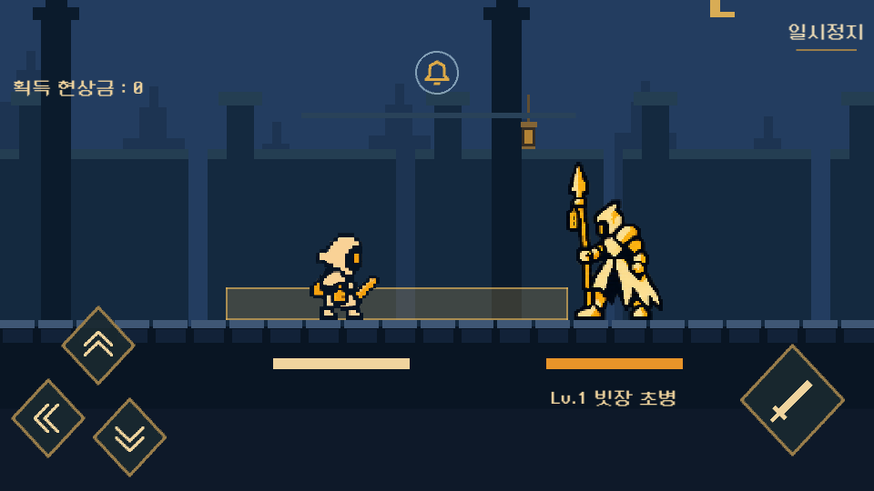
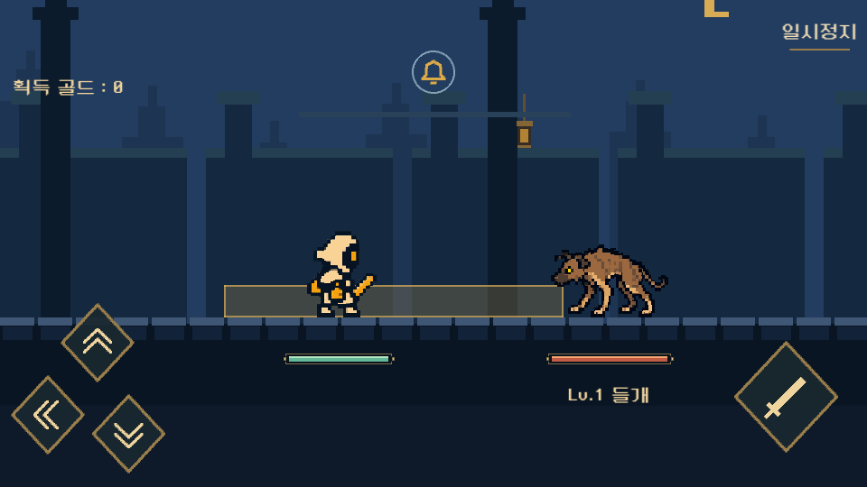
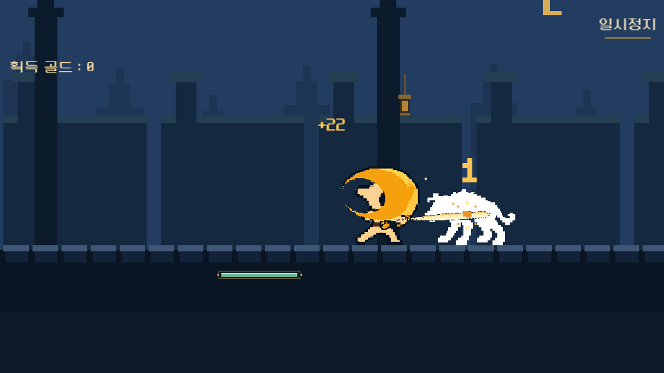
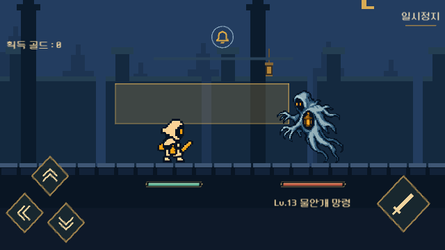
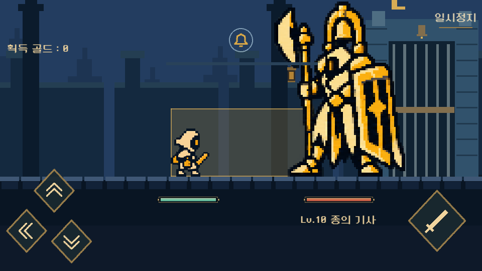

게임 적용 v0.8.3
2026.10.23 · 사용자 제공 영상 + 현재 코드 + 1차 자료
적을 기억하고,
잘 피한 다음의 공격을 기다리게 만들기
이번 변경은 골드·체력 UI와 전장별 몬스터를 실제 게임에 반영했다. 재미 분석의 우선순위는 초반 처치 시간 → 입력 반응 → 완벽 회피의 보상 → 효과의 강약이다. 아래 밸런스·입력 개선 수치는 다음 비교 실험안이며 이번 빌드에 섞어 적용하지 않았다.
이번 게임에 반영한 내용
골드와 처치 보상
선택·강화·전투·결과 화면의 ‘현상금’을 ‘골드’로 통일했다. 적 처치 시 실제 지급액을 중앙 상단에 +숫자로 1.1초 표시한다. 행운 보너스도 포함하며, 표시 자체는 재화를 다시 지급하지 않는다.
플레이어 타격 횟수 콤보는 제거했다. 종으로 나타내는 적의 연속 공격과 완벽 회피 판정은 유지한다.
작고 읽기 쉬운 체력 바
960×540 기준 플레이어 126×16, 적 144×16. 어두운 금속 프레임 안에 플레이어는 옥색, 적은 적갈색으로 구분한다. 실제 HP 비율을 즉시 표시하며 보스도 같은 하단 자리를 쓴다.
레벨·이름은 적 체력 아래에 남겼다. 공격·회피 중에도 체력 바가 몸을 따라 흔들리지 않는다.

변경 전 v8.2 · 현상금, 굵은 막대, 성 밖 병사
변경 후 Windows 실제 화면 · 골드, 작은 체력 바, 들개
실제 처치 보상 표시. 검수용 적 HP를 1로 설정한 장면이라 피해 숫자는 1이며, +22는 해당 세션에 실제 지급된 골드다.
배치 명세 · Safe Area 기준
화면은 가로형. 바 좌표는 960×540 중앙 전투 영역 기준 플레이어 (312,390,126,16), 적 (603,390,144,16). 골드 팝업은 1084×540 기준 (382,160,320,44)를 Safe Area에 비례 배치한다. 회피·공격 터치 영역과 겹치지 않고, 상단 종·기절 게이지 아래에 둔다. 좁은 640×360 렌더도 별도로 검수한다. 글꼴은 네오둥근모를 유지한다.
전장별 몬스터와 공격
1~9는 성 밖 야생 동물, 10은 기존 성문 문지기. 11~19는 기존 스토리의 물에 잠긴 사슬 주거구에 맞춘 쥐·익사한 주민·물안개 망령, 20은 기존 사슬 간수장이다. 기존 몬스터 원본은 삭제하지 않았으며 10·20 보스의 아트와 수치는 유지했다. 이번에 새 배경까지 교체한 것은 아니다.
각 새 적은 공격 1개, 기절 1개, 정지 기본 포즈로 구성했다. 피격은 현재 자세를 유지한 흰색 플래시(최초 45ms, 이후 75ms 복귀)이며 사망 클립은 추가하지 않았다. 방향마다 새 공격을 재생하는 구조가 아니라 같은 공격 클립과 방향 예고를 조합한다. 표시된 모션은 Unity에 사용한 원본 프레임이다.
동물의 금속 무기 궤적을 제거하고 먼지·발톱 계열로, 주민은 나무색으로, 망령은 청록 물결로 구분했다. 실제 타격·쳐내기와 회피 성공에 같은 충격음을 겹치던 부분을 분리했다. 작은 적에게 검격·피해 숫자·파편이 몸통 높이에서 나타나도록 맞췄다.
레퍼런스가 재미있게 느껴지는 이유와 현재 차이
가장 큰 차이로 의심되는 것은 ‘같은 입력을 몇 번 해야 장면이 바뀌는가’다.현재 기본 공격력 10 / 첫 적 체력 120은 치명타·기절 보너스 없이 12타다. 영상에서 기록한 초반 공격력 18~20, 첫 적 체력 약 45~55라는 표본을 적용하면 약 3타다. 레퍼런스 HP는 체력 바 픽셀 추정이며 내부 수치를 확인한 것은 아니다. 재미의 원인 역시 실험 전 가설이다.
표본 타임스탬프는 100~200ms 간격으로 추출한 프레임 기준이며 입력 지연·정확한 내부 판정은 측정하지 못했다. 이번 관찰만으로 전체 이용자의 재미 원인을 단정하지 않는다.
사용자 제공 영상 · 일반 적의 예고와 공격 주기사용자 제공 영상 · 연속 공격과 회피 흐름
다음 실험안 · 아직 게임에 적용하지 않은 수치
우선 1초반 처치 횟수 비교
첫 적 HP 120 / 60 / 40, 기본 공격력 10으로 비교한다. 즉 12 / 6 / 4타. 성장 후 초반은 1~3타까지 줄고, 중후반은 다시 8~14타로 길어지는 곡선을 검토한다.
기존 요청인 10단위 급격한 난이도·강화비 상승은 유지한다. 단, 11층 진입 전 예상 강화 수준에서 몇 대 맞고 죽는지를 함께 검증해야 ‘수치 벽’과 ‘어려운 전투’를 구분할 수 있다.
우선 2공격 입력 80ms 버퍼
쿨다운 종료 직전 누른 공격 1개만 최대 80ms 보관해 준비되는 즉시 실행한다. 회피는 자동 예약하지 않는다. 일시정지·사망·스테이지 전환·새 회피 입력 시 예약을 비운다.
공격 간격 500ms와 피해 판정은 그대로 두고, 무효 입력 비율이 줄어드는지만 먼저 비교한다. 자동 연타는 별도 안건이다.
우선 3완벽 반격의 한 방
완벽 회피 후 첫 반격 1회에만 피해 1.4배를 비교 실험한다. 기절 피해·치명타와 함께 적용될 때 상한을 계산하고, 짧은 ‘반격’ 표시와 버튼 강조를 성공 후에만 켠다.
적 연속 공격 도중에는 아직 남은 종을 계속 보여 준다. 무턱대고 공격하도록 유도해 다음 타격을 맞게 만들지 않는다.
우선 4접촉 순간의 강약
일반 타격은 기존 플래시, 반격·치명타는 35~45ms, 처치는 55ms의 짧은 정지를 실험한다. 정지를 넣는다면 판정·적 예고·애니메이션을 같은 시계로 멈추고, UI만 별도 시계를 사용한다.
경고 파동만 계속 움직이거나 완벽 회피 판정이 짧아지는 구현은 피한다. 접근성 옵션에서 흔들림·섬광을 줄여도 성공을 알 수 있어야 한다.
통과 여부를 판단할 플레이테스트
5명에게 순서를 섞어 동일한 첫 5스테이지를 플레이하게 한다. 처음 처치까지 걸린 시간, 1분당 무효 공격 입력, ‘방향을 틀림/타이밍을 틀림’의 비율, 완벽 회피 후 실제 반격 사용률, 강화를 고른 이유를 기록한다. 재미 점수 하나보다 “공격이 안 나갔다”, “언제 때려야 하는지 모르겠다”, “적이 너무 오래 버틴다”가 어느 변경에서 줄었는지 확인한다. 제안 수치가 좋아 보인다는 이유만으로 전 스테이지에 확장하지 않는다.
근거와 검수
게임 감각 연구는 물리적 일관성, 사건의 중요성을 전달하는 피드백, 플레이어 의도의 실행 지원을 나눠 다룬다. 이 구분을 적용해 이번 분석도 그림·효과뿐 아니라 입력과 보상 흐름을 함께 검토했다. Pichlmair & Johansen, Designing Game Feel. A Survey
흔들림은 사건의 강도에 따라 다르게 주고 시간이 지나며 감쇠시켜야 강약을 만들 수 있다. 모든 공격에 같은 큰 흔들림을 추가하는 안은 우선순위에서 제외했다. Squirrel Eiserloh, Juicing Your Cameras with Math, GDC 2016, pp.9–17
GDC의 Juice It or Lose It / Don't Juice It or Lose It은 관련 자료로 확인했으나 확인 시 Vault가 점검 페이지로 연결되어 강연 전문을 본 근거로 사용하지 않았다.

640×360 Windows 렌더 · 물안개 망령
기존 문지기 보존 · 보스도 하단 체력Windows 실행 파일 · Windows 압축 배포본